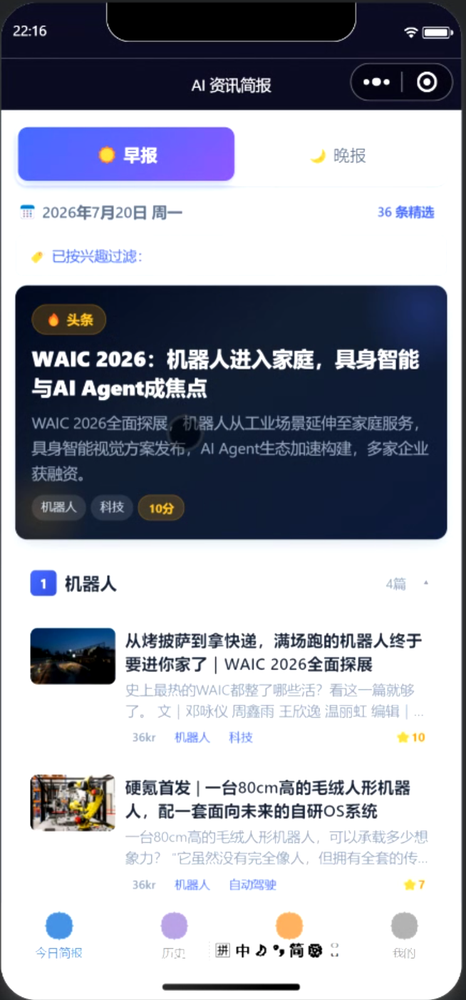
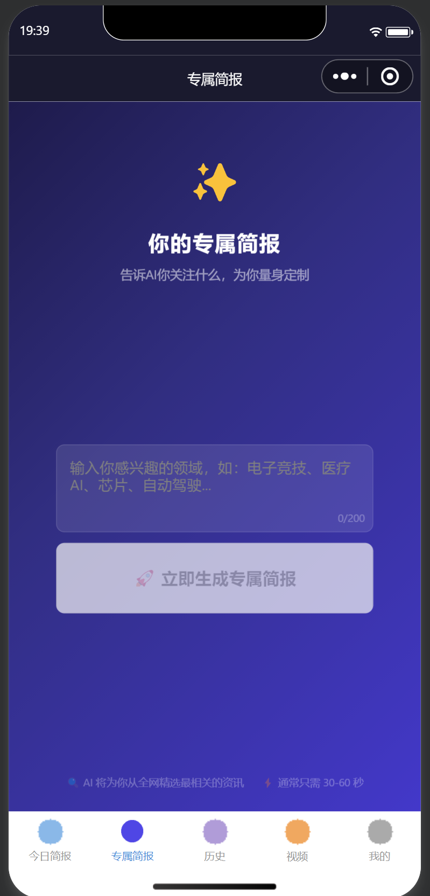
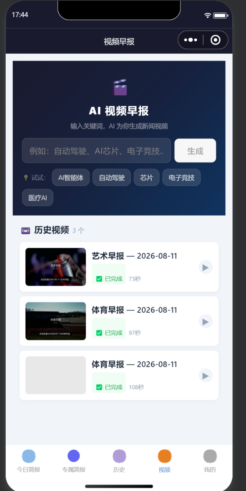
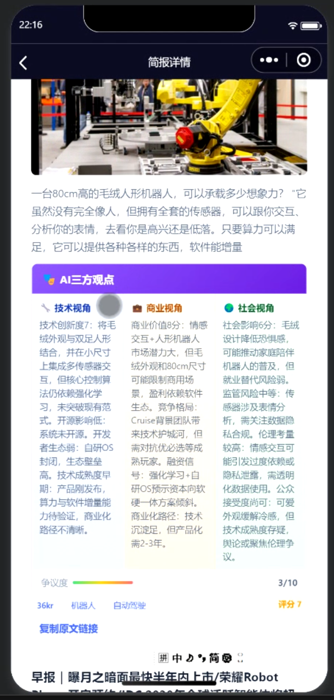

应用智能体 · 可完整跑通
简报智能体
把自己关心的领域写成一句话，每天早晚收到一份 AI 资讯简报：早晚报按 14 个标签分区由 LLM 生成，专属简报写下兴趣 30–60 秒现抓现生成，还能把同一批新闻素材做成视频早报。

背后的故事
AI 圈一天几百条更新，散在几十个源里——公众号、GitHub Trending、Hacker News、二十多个 RSS，想跟住又不值得天天刷十几个站。更麻烦的是「我看的」和「别人看的」不是一回事：做芯片的、看投融资的、打电竞的，关心的完全不是同一批新闻，通用榜单永远有一半是噪音。这个小程序把入口收成一个：每天早晚各一份按 14 个标签分好区的简报，打开就能看；想更偏一点，就在「专属简报」里写一句自己的兴趣（比如「医疗 AI、芯片、电子竞技」），系统去全网现抓现生成——不用先选标签，也不用等第二天。
0个RSS 源
0个标签分区
0个小程序 Tab
0s专属简报出稿
平台实拍



项目时间线
v1.0.0
可完整跑通
本地起全栈 + 小程序真机：今日简报 / 专属简报 / 历史 / 视频 / 我的 5 个 Tab 全部跑通，早晚报由调度每日自动生成。
抓取
多源聚合
接 GitHub Trending、Hacker News 与 23 个 RSS 源，并按关键词走 Bing / Google News 检索，引擎逐个回退、失败自动降级。
视频
新闻成片
输入关键词触发，抓素材 / 剪辑 / 配音 / 合成四阶段进度实时轮询，成片落库后在播放页直接看。
已知局限
- ▸视频生成跑在本地（依赖 FFmpeg / Edge-TTS），还没上服务器，只在本地环境可用。
- ▸专属简报为保住 30–60 秒出稿，砍掉了三方辩论、翻译与二次打分，深度不如早晚报；也更吃关键词命中。
- ▸去重是「中文标题 Jaccard + LLM 判定同一事件」，不是向量召回，长尾重复仍会漏。
- ▸后端接口未做鉴权与限流，openid 由客户端直接传入，对外公开前需要补。